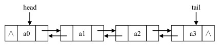
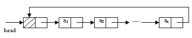

双向链表
单链表的一个优点是结构简单，但是它也有一个缺点，即在单链表中只能通过一个结点的引用访问其后续结点，而无法直接访问其前驱结点，
要在单链表中找到某个结点的前驱结点，必须从链表的首结点出发依次向后寻找，但是需要Ο(n)时间。
为此我们可以扩展单链表的结点结构，使得通过一个结点的引用，不但能够访问其后续结点，也可以方便的访问其前驱结点。
扩展单链表结点结构的方法是，在单链表结点结构中新增加一个域，该域用于指向结点的直接前驱结点。
扩展后的结点结构是构成双向链表的结点结构，如图 所示。
双向链表是通过上述定义的结点使用 pre 以及 next 域依次串联在一起而形成的。一个双向链表的结构如图所示。

在双向链表中同样需要完成数据元素的查找、插入、删除等操作。在双向链表中进行查找与在单链表中类似，只不过在双向链表中查找操作可以从链表的首结点开始，
也可以从尾结点开始，但是需要的时间和在单链表中一样
在使用双向链表实现链接表时，为使编程更加简洁，我们使用带两个哑元结点的双向链表来实现链接表。
其中一个是头结点，另一个是尾结点，它们都不存放数据元素，
头结点的pre 为空，而尾结点的 Next 为空
在具有头尾结点的双向链表中插入和删除结点，无论插入和删除的结点位置在何处，因为首尾结点的存在，插入、删除操作都可以被归结为某个中间结点的插入和删除；
并且因为首尾结点的存在，整个链表永远不会为空，因此在插入和删除结点之后，
也不用考虑链表由空变为非空或由非空变为空的情况下 head 和 tail 的指向问题；从而简化了程序。
Java中的LinkedList底层使用的就是双向链表。
循环链表
在一个循环链表中, 首节点和末节点被连接在一起。这种方式在单向和双向链表中皆可实现。
要转换一个循环链表，你开始于任意一个节点然后沿着列表的任一方向直到返回开始的节点。
循环链表可以被视为"无头无尾"。
循环链表中第一个节点之前就是最后一个节点，反之亦然。
循环链表的无边界使得在这样的链表上设计算法会比普通链表更加容易。
对于新加入的节点应该是在第一个节点之前还是最后一个节点之后可以根据实际要求灵活处理，区别不大。
另外有一种模拟的循环链表，就是在访问到最后一个节点之后的时候，手工跳转到第一个节点。
访问到第一个节点之前的时候也一样。这样也可以实现循环链表的功能，在直接用循环链表比较麻烦或者可能会出现问题的时候可以用。
单向链表的循环带头结点的非空链表

单向链表的循环带头结点的空链表
双向链表的循环带头结点的非空链表
双向链表的循环带头结点的空链表